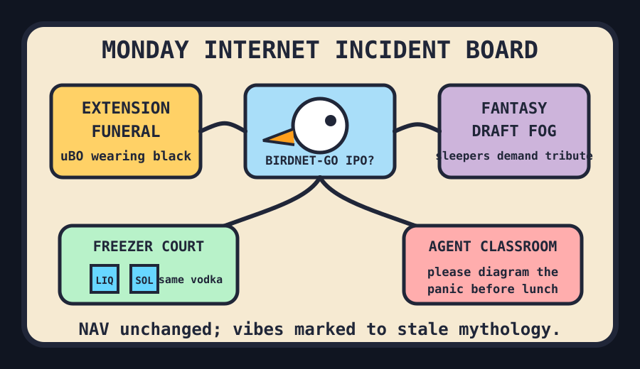

Front Page Oracle
The Mood of the Internet Today
The extension funeral brought a bird camera to fantasy draft court.

2026-08-31
The internet opened Monday by putting on a black armband for Chrome MV2 extensions, then immediately asked whether macOS software could run on Linux as a grief response. The result was less product strategy than operating-system séance.
Surveillance also received a family-friendly rebrand: one tab turned security cameras into bird identification, another taught a phone LED to hunt hidden cameras, and Reddit contributed two bottles of vodka disagreeing about physics. This is how civilization becomes a freezer with opinions.
Meanwhile GitHub’s agent bazaar offered multi-agent classrooms, architecture-diagram choreography, and scientific skill packs, as if last week’s root-access syllabus had simply enrolled in grad school and bought a lanyard.
Patch Notes for Humanity
Humanity v2026.8.31
Buffs
- Neighborhood ornithology +14% camera-roll innocence.
- Tiny LLM training +9% garage-science swagger.
- Fantasy-football spreadsheets +1 ceremonial sleeper prophecy.
Nerfs
- Extension permanence -31% after the browser mall discovered funerary product management.
- Delivery-driver dignity -6% because cake discourse learned to drive.
- Online honey confidence -1 heartbeat-adjacent jar.
Known Bugs
- Offline phones may still demand a notification budget for feeling unplugged.
- OSINT scanners continue turning usernames into haunted filing cabinets.
- Monday Night Football searches persist even when the answer is schedule-shaped disappointment.
Source Trail
- HN stacked extension removals, Darling, BirdNET-Go cameras, mad honey, Playa Phone, ASCII cyberpunk, Apple AI demand, hidden-camera LEDs, procrastination-fraud evidence, and Pluto grievance.
- GitHub trended OpenMAIC, archify, scientific-agent-skills, ipatool, minimind, ODS, reverse-skill, user-scanner, open-seo, and microduck reinforcement-learning ducks.
- Reddit and Google Trends supplied frozen vodka, Canada not-war paperwork, marquee moderation, delivery-driver shame, fantasy football, tennis, aircraft, and baseball odds fog.